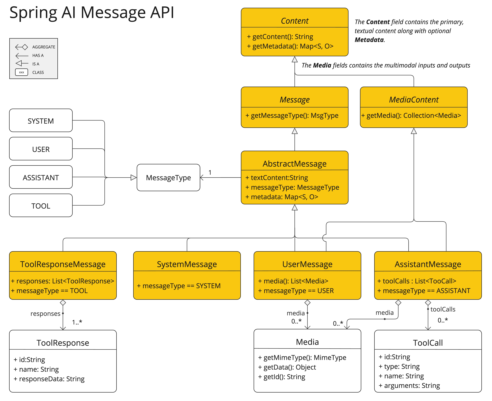

Prompts
Prompts are the inputs that guide an AI model to generate specific outputs. The design and phrasing of these prompts significantly influence the model’s responses.
At the lowest level of interaction with AI models in Spring AI, handling prompts in Spring AI is somewhat similar to managing the "View" in Spring MVC. This involves creating extensive text with placeholders for dynamic content. These placeholders are then replaced based on user requests or other code in the application. Another analogy is a SQL statement that contain placeholders for certain expressions.
As Spring AI evolves, it will introduce higher levels of abstraction for interacting with AI models.
The foundational classes described in this section can be likened to JDBC in terms of their role and functionality.
The ChatModel class, for instance, is analogous to the core JDBC library in the JDK.
The ChatClient class can be likened to the JdbcClient, built on top of ChatModel and providing more advanced constructs via Advisor
to consider past interactions with the model, augment the prompt with additional contextual documents, and introduce agentic behavior.
The structure of prompts has evolved over time within the AI field. Initially, prompts were simple strings. Over time, they grew to include placeholders for specific inputs, like "USER:", which the AI model recognizes. OpenAI have introduced even more structure to prompts by categorizing multiple message strings into distinct roles before they are processed by the AI model.
API Overview
Prompt
It is common to use the call() method of ChatModel that takes a Prompt instance and returns a ChatResponse.
The Prompt class functions as a container for an organized series of Message objects and a request ChatOptions.
Every Message embodies a unique role within the prompt, differing in its content and intent.
These roles can encompass a variety of elements, from user inquiries to AI-generated responses to relevant background information.
This arrangement enables intricate and detailed interactions with AI models, as the prompt is constructed from multiple messages, each assigned a specific role to play in the dialogue.
Below is a truncated version of the Prompt class, with constructors and utility methods omitted for brevity:
public class Prompt implements ModelRequest<List<Message>> {
private final List<Message> messages;
private ChatOptions chatOptions;
}Convenience Methods
The Prompt class provides several convenience methods for accessing messages by their role:
Single Message Access:
-
getUserMessage(): Returns the last user message in the prompt, or an emptyUserMessageif none exists -
getSystemMessage(): Returns the first system message in the prompt, or an emptySystemMessageif none exists -
getLastUserOrToolResponseMessage(): Returns the last user or tool response message, useful for conversation continuity
Multiple Message Access:
-
getUserMessages(): Returns a list of all user messages in the prompt, preserving their order -
getSystemMessages(): Returns a list of all system messages in the prompt, preserving their order
These methods are particularly useful when working with multi-turn conversations or when you need to process messages by role.
Message
The Message interface encapsulates a Prompt textual content, a collection of metadata attributes, and a categorization known as MessageType.
The interface is defined as follows:
public interface Content {
String getContent();
Map<String, Object> getMetadata();
}
public interface Message extends Content {
MessageType getMessageType();
}The multimodal message types implement also the MediaContent interface providing a list of Media content objects.
public interface MediaContent extends Content {
Collection<Media> getMedia();
}Various implementations of the Message interface correspond to different categories of messages that an AI model can process.
The Models distinguish between message categories based on conversational roles.

These roles are effectively mapped by the MessageType, as discussed below.
Roles
Each message is assigned a specific role. These roles categorize the messages, clarifying the context and purpose of each segment of the prompt for the AI model. This structured approach enhances the nuance and effectiveness of communication with the AI, as each part of the prompt plays a distinct and defined role in the interaction.
The primary roles are:
-
System Role: Guides the AI’s behavior and response style, setting parameters or rules for how the AI interprets and replies to the input. It’s akin to providing instructions to the AI before initiating a conversation.
-
User Role: Represents the user’s input – their questions, commands, or statements to the AI. This role is fundamental as it forms the basis of the AI’s response.
-
Assistant Role: The AI’s response to the user’s input. More than just an answer or reaction, it’s crucial for maintaining the flow of the conversation. By tracking the AI’s previous responses (its 'Assistant Role' messages), the system ensures coherent and contextually relevant interactions. The Assistant message may contain Function Tool Call request information as well. It’s like a special feature in the AI, used when needed to perform specific functions such as calculations, fetching data, or other tasks beyond just talking.
-
Tool/Function Role: The Tool/Function Role focuses on returning additional information in response to Tool Call Assistant Messages.
Roles are represented as an enumeration in Spring AI as shown below
public enum MessageType {
USER("user"),
ASSISTANT("assistant"),
SYSTEM("system"),
TOOL("tool");
...
}PromptTemplate
A key component for prompt templating in Spring AI is the PromptTemplate class, designed to facilitate the creation of structured prompts that are then sent to the AI model for processing
public class PromptTemplate implements PromptTemplateActions, PromptTemplateMessageActions {
// Other methods to be discussed later
}This class uses the TemplateRenderer API to render templates. By default, Spring AI uses the StTemplateRenderer implementation, which is based on the open-source StringTemplate engine developed by Terence Parr. Template variables are identified by the {} syntax, but you can configure the delimiters to use other syntax as well.
public interface TemplateRenderer extends BiFunction<String, Map<String, Object>, String> {
@Override
String apply(String template, Map<String, Object> variables);
}Spring AI uses the TemplateRenderer interface to handle the actual substitution of variables into the template string.
The default implementation uses [StringTemplate].
You can provide your own implementation of TemplateRenderer if you need custom logic.
For scenarios where no template rendering is required (e.g., the template string is already complete), you can use the provided NoOpTemplateRenderer.
PromptTemplate promptTemplate = PromptTemplate.builder()
.renderer(StTemplateRenderer.builder().startDelimiterToken('<').endDelimiterToken('>').build())
.template("""
Tell me the names of 5 movies whose soundtrack was composed by <composer>.
""")
.build();
String prompt = promptTemplate.render(Map.of("composer", "John Williams"));The interfaces implemented by this class support different aspects of prompt creation:
PromptTemplateStringActions focuses on creating and rendering prompt strings, representing the most basic form of prompt generation.
PromptTemplateMessageActions is tailored for prompt creation through the generation and manipulation of Message objects.
PromptTemplateActions is designed to return the Prompt object, which can be passed to ChatModel for generating a response.
While these interfaces might not be used extensively in many projects, they show the different approaches to prompt creation.
The implemented interfaces are
public interface PromptTemplateStringActions {
String render();
String render(Map<String, Object> model);
}The method String render(): Renders a prompt template into a final string format without external input, suitable for templates without placeholders or dynamic content.
The method String render(Map<String, Object> model): Enhances rendering functionality to include dynamic content. It uses a Map<String, Object> where map keys are placeholder names in the prompt template, and values are the dynamic content to be inserted.
public interface PromptTemplateMessageActions {
Message createMessage();
Message createMessage(List<Media> mediaList);
Message createMessage(Map<String, Object> model);
}The method Message createMessage(): Creates a Message object without additional data, used for static or predefined message content.
The method Message createMessage(List<Media> mediaList): Creates a Message object with static textual and media content.
The method Message createMessage(Map<String, Object> model): Extends message creation to integrate dynamic content, accepting a Map<String, Object> where each entry represents a placeholder in the message template and its corresponding dynamic value.
public interface PromptTemplateActions extends PromptTemplateStringActions {
Prompt create();
Prompt create(ChatOptions modelOptions);
Prompt create(Map<String, Object> model);
Prompt create(Map<String, Object> model, ChatOptions modelOptions);
}The method Prompt create(): Generates a Prompt object without external data inputs, ideal for static or predefined prompts.
The method Prompt create(ChatOptions modelOptions): Generates a Prompt object without external data inputs and with specific options for the chat request.
The method Prompt create(Map<String, Object> model): Expands prompt creation capabilities to include dynamic content, taking a Map<String, Object> where each map entry is a placeholder in the prompt template and its associated dynamic value.
The method Prompt create(Map<String, Object> model, ChatOptions modelOptions): Expands prompt creation capabilities to include dynamic content, taking a Map<String, Object> where each map entry is a placeholder in the prompt template and its associated dynamic value, and specific options for the chat request.
Example Usage
A simple example taken from the AI Workshop on PromptTemplates is shown below.
PromptTemplate promptTemplate = new PromptTemplate("Tell me a {adjective} joke about {topic}");
Prompt prompt = promptTemplate.create(Map.of("adjective", adjective, "topic", topic));
return chatModel.call(prompt).getResult();Another example taken from the AI Workshop on Roles is shown below.
String userText = """
Tell me about three famous pirates from the Golden Age of Piracy and why they did.
Write at least a sentence for each pirate.
""";
Message userMessage = new UserMessage(userText);
String systemText = """
You are a helpful AI assistant that helps people find information.
Your name is {name}
You should reply to the user's request with your name and also in the style of a {voice}.
""";
SystemPromptTemplate systemPromptTemplate = new SystemPromptTemplate(systemText);
Message systemMessage = systemPromptTemplate.createMessage(Map.of("name", name, "voice", voice));
Prompt prompt = new Prompt(List.of(userMessage, systemMessage));
List<Generation> response = chatModel.call(prompt).getResults();This shows how you can build up the Prompt instance by using the SystemPromptTemplate to create a Message with the system role passing in placeholder values.
The message with the role user is then combined with the message of the role system to form the prompt.
The prompt is then passed to the ChatModel to get a generative response.
Using a custom template renderer
You can use a custom template renderer by implementing the TemplateRenderer interface and passing it to the PromptTemplate constructor. You can also keep using the default StTemplateRenderer, but with a custom configuration.
By default, template variables are identified by the {} syntax. If you’re planning to include JSON in your prompt, you might want to use a different syntax to avoid conflicts with JSON syntax. For example, you can use the < and > delimiters.
PromptTemplate promptTemplate = PromptTemplate.builder()
.renderer(StTemplateRenderer.builder().startDelimiterToken('<').endDelimiterToken('>').build())
.template("""
Tell me the names of 5 movies whose soundtrack was composed by <composer>.
""")
.build();
String prompt = promptTemplate.render(Map.of("composer", "John Williams"));Using resources instead of raw Strings
Spring AI supports the org.springframework.core.io.Resource abstraction, so you can put prompt data in a file that can directly be used in a PromptTemplate.
For example, you can define a field in your Spring managed component to retrieve the Resource.
@Value("classpath:/prompts/system-message.st")
private Resource systemResource;and then pass that resource to the SystemPromptTemplate directly.
SystemPromptTemplate systemPromptTemplate = new SystemPromptTemplate(systemResource);Prompt Engineering
In generative AI, the creation of prompts is a crucial task for developers. The quality and structure of these prompts significantly influence the effectiveness of the AI’s output. Investing time and effort in designing thoughtful prompts can greatly improve the results from the AI.
Sharing and discussing prompts is a common practice in the AI community. This collaborative approach not only creates a shared learning environment but also leads to the identification and use of highly effective prompts.
Research in this area often involves analyzing and comparing different prompts to assess their effectiveness in various situations. For example, a significant study demonstrated that starting a prompt with "Take a deep breath and work on this problem step by step" significantly enhanced problem-solving efficiency. This highlights the impact that well-chosen language can have on generative AI systems' performance.
Grasping the most effective use of prompts, particularly with the rapid advancement of AI technologies, is a continuous challenge. You should recognize the importance of prompt engineering and consider using insights from the community and research to improve prompt creation strategies.
Creating effective prompts
When developing prompts, it’s important to integrate several key components to ensure clarity and effectiveness:
-
Instructions: Offer clear and direct instructions to the AI, similar to how you would communicate with a person. This clarity is essential for helping the AI "understand" what is expected.
-
External Context: Include relevant background information or specific guidance for the AI’s response when necessary. This "external context" frames the prompt and aids the AI in grasping the overall scenario.
-
User Input: This is the straightforward part - the user’s direct request or question forming the core of the prompt.
-
Output Indicator: This aspect can be tricky. It involves specifying the desired format for the AI’s response, such as JSON. However, be aware that the AI might not always adhere strictly to this format. For instance, it might prepend a phrase like "here is your JSON" before the actual JSON data, or sometimes generate a JSON-like structure that is not accurate.
Providing the AI with examples of the anticipated question and answer format can be highly beneficial when crafting prompts. This practice helps the AI "understand" the structure and intent of your query, leading to more precise and relevant responses. While this documentation does not delve deeply into these techniques, they provide a starting point for further exploration in AI prompt engineering.
Following is a list of resources for further investigation.
Simple Techniques
-
Text Summarization:
Reduces extensive text into concise summaries, capturing key points and main ideas while omitting less critical details. -
Question Answering:
Focuses on deriving specific answers from provided text, based on user-posed questions. It’s about pinpointing and extracting relevant information in response to queries. -
Text Classification:
Systematically categorizes text into predefined categories or groups, analyzing the text and assigning it to the most fitting category based on its content. -
Conversation:
Creates interactive dialogues where the AI can engage in back-and-forth communication with users, simulating a natural conversation flow. -
Code Generation:
Generates functional code snippets based on specific user requirements or descriptions, translating natural language instructions into executable code.
Advanced Techniques
-
Zero-shot, Few-shot Learning:
Enables the model to make accurate predictions or responses with minimal to no prior examples of the specific problem type, understanding and acting on new tasks using learned generalizations. -
Chain-of-Thought:
Links multiple AI responses to create a coherent and contextually aware conversation. It helps the AI maintain the thread of the discussion, ensuring relevance and continuity. -
ReAct (Reason + Act):
In this method, the AI first analyzes (reasons about) the input, then determines the most appropriate course of action or response. It combines understanding with decision-making.
Microsoft Guidance
-
Framework for Prompt Creation and Optimization:
Microsoft offers a structured approach to developing and refining prompts. This framework guides users in creating effective prompts that elicit the desired responses from AI models, optimizing the interaction for clarity and efficiency.
Tokens
Tokens are essential in how AI models process text, acting as a bridge that converts words (as we understand them) into a format that AI models can process. This conversion occurs in two stages: words are transformed into tokens upon input, and these tokens are then converted back into words in the output.
Tokenization, the process of breaking down text into tokens, is fundamental to how AI models comprehend and process language. The AI model works with this tokenized format to understand and respond to prompts.
To better understand tokens, think of them as portions of words. Typically, a token represents about three-quarters of a word. For instance, the complete works of Shakespeare, totaling roughly 900,000 words, would translate to around 1.2 million tokens.
Experiment with the OpenAI Tokenizer UI to see how words are converted into tokens.
Tokens have practical implications beyond their technical role in AI processing, especially regarding billing and model capabilities:
-
Billing: AI model services often bill based on token usage. Both the input (prompt) and the output (response) contribute to the total token count, making shorter prompts more cost-effective.
-
Model Limits: Different AI models have varying token limits, defining their "context window" – the maximum amount of information they can process at a time. For example, GPT-3’s limit is 4K tokens, while other models like Claude 2 and Meta Llama 2 have limits of 100K tokens, and some research models can handle up to 1 million tokens.
-
Context Window: A model’s token limit determines its context window. Inputs exceeding this limit are not processed by the model. It’s crucial to send only the minimal effective set of information for processing. For example, when inquiring about "Hamlet," there’s no need to include tokens from all of Shakespeare’s other works.
-
Response Metadata: The metadata of a response from an AI model includes the number of tokens used, a vital piece of information for managing usage and costs.